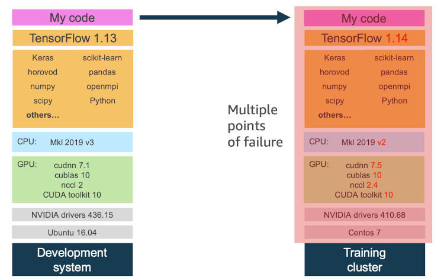
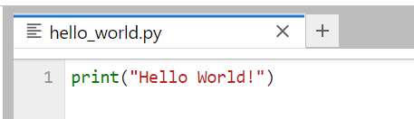
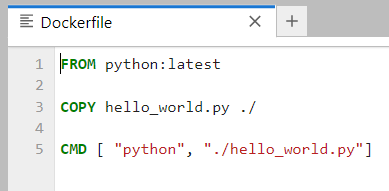
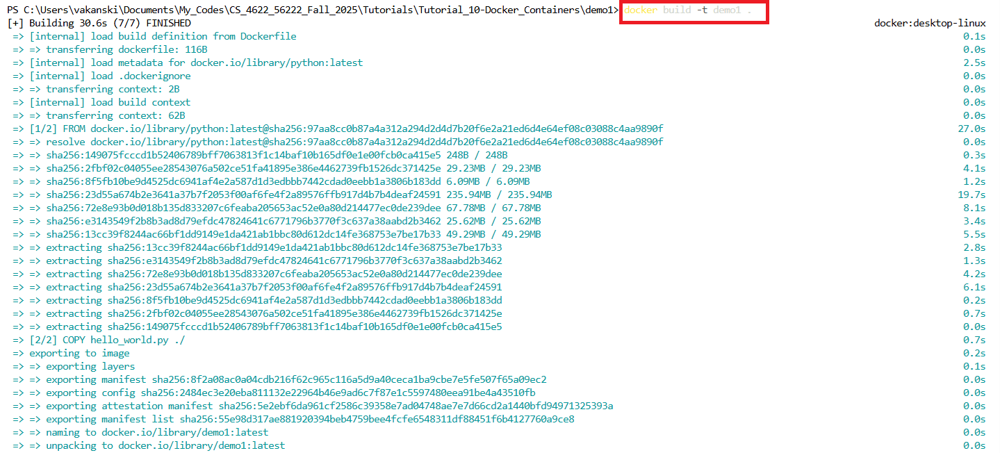
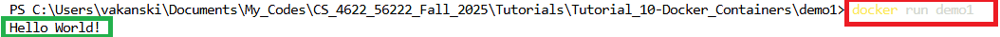
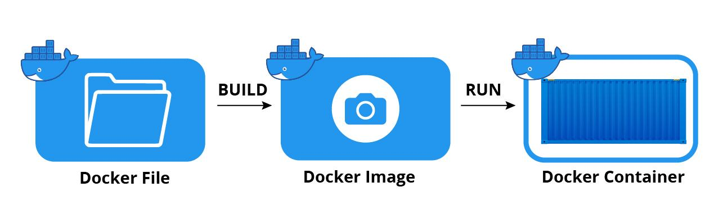
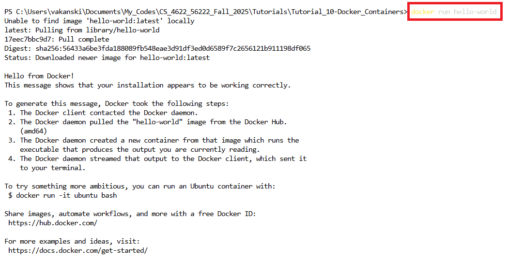
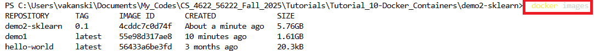
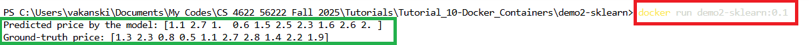
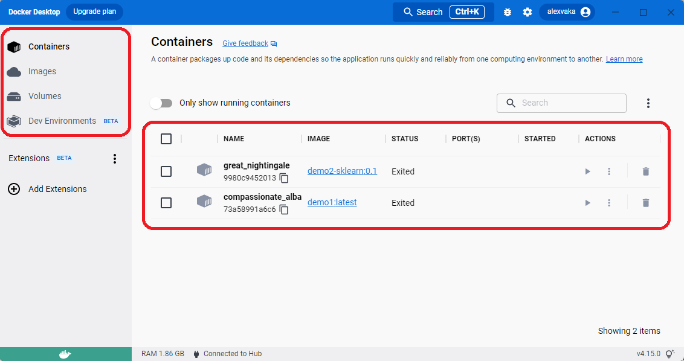

# Import libraries
import numpy as np
from sklearn import ensemble
from sklearn.datasets import fetch_california_housing
from sklearn.model_selection import train_test_split
import os
from joblib import dump
# Load and split data
housing = fetch_california_housing(as_frame=True).frame
X = housing.drop('MedHouseVal', axis=1)
y = housing['MedHouseVal']
X_train, X_test, y_train, y_test = train_test_split(X, y, random_state=13, test_size=0.2)
# Fit regression model
model = ensemble.GradientBoostingRegressor()
model.fit(X_train, y_train)
# Directory paths
MODEL_DIR = os.environ["MODEL_DIR"]
MODEL_FILE = os.environ["MODEL_FILE"]
MODEL_PATH = os.path.join(MODEL_DIR, MODEL_FILE)
# Save the model
dump(model, MODEL_PATH)Lecture 17 - Reproducible Projects, Docker Containers


- 17.1 Reproducibility of Data Science Projects
- 17.2 Docker Containers
- 17.3 Hello World in Docker
- 17.4 Scikit-Learn Models in Docker
- 17.5 Docker Registries and Repositories
- References
17.1 Reproducibility of Data Science Projects
Ensuring the reproducibility of Data Science projects is important for several reasons. One is that our customers (internal within your organization, or external) may use different operating systems, code dependencies, hardware, and they should be able to use our developed product and obtain the expected results. Another reason is collaborative development, where we may need to share our code with collaborators, and ensuring reproducibility of our code requires information about the full environment in which the code was developed.
Predictions of Machine Learning models depend on the model architecture and parameters, code, libraries and dependencies needed to run the code. Ensuring reproducibility is a challenge that can affect the performance if not addressed. Regarding the model architecture and weights, we can simply save and load them, to ensure that the same model is used and that the predictions are consistent. Regarding code, we can use fixed random seeds and version control to ensure that the same data and code are used for training the model and making predictions. Dealing with code libraries and dependencies is more challenging, because libraries are updated frequently, and the model behavior can change, or even worse, the code can crash with some updates. To address this issue requires to apply a strategy for constraining the environment in which the model is developed and deployed.
The main strategies to constrain the libraries and dependencies include:
- Interoperable standards,
- Virtual environments,
- Docker containers.
The first strategy involves standards like Open Neural Network Exchange (ONNX). ONNX is an open-source format for representing neural networks that allows interoperability between different frameworks (such as PyTorch and TensorFlow), or between different platforms. E.g., it allows a model trained in PyTorch to be imported and used for predictions in TensorFlow. Despite the potential, this strategy requires to frequently update the tools as the frameworks are updated, it has limited support for some operations in neural networks, it often has bugs in the conversions between the frameworks, and the performance of models can differ after the conversion to a target framework.
The second strategy is to use virtual environments in Python or Conda. Although using virtual environments can isolate Python-level dependencies, they provide only partial solution, since operating system-level dependencies or dependencies like CUDA that involve interaction with hardware may be outside the scope of virtual environments and cannot be addressed with this strategy. The differences in OS-level dependencies or CUDA can impact execution consistency.
The third strategy relies on using Docker containers and it is widely adopted at present time. Docker is an open-source platform that uses containers to constrain project dependencies. Container is a standardized unit of fully packaged software used for local development, shipping code, and deploying systems.
The demo folders demo1 and demo2-sklearn used in this lecture are provided next to this notebook in the course repository.
17.2 Docker Containers
An example of the reproducibility challenge with Data Science projects is shown in the next figure, depicting the multiple points for failure when we move our code to a cluster. These issues can include different versions of libraries, dependencies, drivers, or operating system. The main advantages of Docker containers are that they contain all dependencies, including hardware libraries, and ensure reproducible and consistent code performance.

Figure: Reproducibility challenge.
Characteristics of containers are:
- Portable: because containers encapsulate the application code, dependencies, and runtime environment, making them independent of the specific setup of the host system. Although containers share the host operating system’s kernel, they can be run seamlessly across machines with compatible operating systems and hardware architectures. This portability enables teams to easily collaborate on projects and experiment with new software or frameworks without spending time configuring environments.
- Lightweight, since the containers don’t require a full operating system, and they share the kernel of the host operating system.
- Scalable, applications can easily be scaled by adding or removing container instances.
- Secure, the application and its dependencies run in an isolated environment, hence the containers are less exposed to attacks.
- Facilitate deployment, where Data Science projects can be easily containerized and deployed for consumption by the end-users, with consistent performance between development and production environments.
Note also that there are notable differences between containers and Virtual Machines (VMs). VMs run a complete operating system with its own kernel, and each VM operates as an independent instance with its dedicated resources. Containers do not require hypervisor or hardware virtualization, and they share the host’s operating system kernel. This means that containers only need to package the application, its dependencies, and the minimal required components to run, without duplicating the entire operating system. Because of that, containers are smaller in size and faster to boot. VMs offer stronger isolation than containers, because each VM operates independently of the host, whereas containers share the same kernel with the host. Orchestration tools for containers such as Kubernetes and Docker Swarm can be used to manage and scale containerized applications across clusters of machines, whereas orchestration of VMs is more complex. Containers are well-suited for microservices architectures, continuous integration and deployment (CI/CD), and scalable, distributed applications, while VMs are used for running legacy applications, and environments requiring strong isolation or using multiple operating systems.
Important concepts for working with Docker include:
- Dockerfile - a text file containing instructions for building a Docker image.
- Image - a built package containing the application and its dependencies.
- Container - an instance providing an isolated environment where the Docker image is run.
We will explain these concepts through several examples in the following sections.
17.2.1 Installing Docker
Docker is installed on a personal computer with the Docker Desktop application, which is available for Windows, macOS, and Linux. On Windows, Docker Desktop runs Linux containers through the Windows Subsystem for Linux (WSL 2), and depending on the version of Windows, the installer may ask to install or update WSL. On Linux servers, the Docker Engine can also be installed from the command line without the desktop application. Please follow the instructions on the Docker installation page for more detailed information.
After the installation, open a terminal (e.g., Git Bash or PowerShell on Windows) and run docker --version to verify that Docker is installed and running.
17.3 Hello World in Docker
Let’s start with a simple “Hello World” example in Docker, where the goal is to create a container with a Python file to print the Hello World! statement.
17.3.1 Step 1: Create a Python Script
For this purpose, we will create the Python script shown below that has just one line of code, and we will save it under the name hello_world.py in the folder demo1.

17.3.2 Step 2: Create a Dockerfile
Dockerfiles provide instructions for defining custom environments for our projects. I.e., for each particular project we will define the required software packages and libraries in a Dockerfile, and we will use the Dockerfile to build a Docker image.
It is common to start the Dockerfile with a base environment, which can simply include the latest Python version. Alternatively, as a base environment we can import pre-build environments by other developers. Docker provides access to Docker Hub, which is a registry with a large number of Docker images that have been published by other developers, and allows to directly import and take advantage of many pre-built environments.
Dockerfiles are plain text files, and for this simple project the Dockerfile is shown below:
- The first line uses the
FROMcommand to instruct Docker to use Python as a base image for the environment. The termlatestinstructs Docker to retrieve the image of the latest official Python version. Docker will first check if the image is already available on our machine, and if it isn’t, Docker will automatically download the image from Docker Hub. Alternatively, if we wanted to work with an earlier Python version, we can just writeFROM python:3.11, for example. Pinning a specific version is recommended for reproducibility, sincelatestchanges over time. - The second line uses the
COPYcommand to copy the createdhello_world.pyfile from the local folder on my computer to the filesystem of the Docker image. The notation./refers to the working directory of the Docker image, which for thepythonbase image is the root directory/. The syntax isCOPY source_directory destination_directory. - The third line uses the
CMDcommand to execute thehello_world.pyscript from the working directory in the image when the container is run.

The file needs to be saved under the name Dockerfile. The organization of the demo1 folder is:
demo1
├── Dockerfile
├── hello_world.py17.3.3 Step 3: Build the Docker Image
Docker image is a packaged application that includes the application code, dependencies, and preconfigured environment needed to run it. Docker images provide a convenient way to distribute applications for private use or public sharing with other Docker users.
To build a Docker image from the Dockerfile, we will use the following code.
docker build -t demo1 .Docker code begins with the keyword docker. The command build specifies to build a Docker image. -t is used to set a tag to the image, and in this case we tag the image with the name demo1. The dot . at the end of the line specifies to build the image by using the Dockerfile that is located in the current directory where hello_world.py script is located.

When we build a Docker image using a Dockerfile, the following steps are executed:
- Docker reads the Dockerfile.
- Downloads the base image (if it is not already available locally).
- Executes the Dockerfile instructions, such as installing dependencies and copying application files.
- Creates image layers that represent the filesystem changes made during the build process.
- Stores the resulting image in Docker’s local image storage.
The Docker image that we just built contains a collection of files needed to provide an environment for running an application. Docker images consist of multiple layers, where each layer represents a set of filesystem changes. For example, an image can include layers containing operating system files, the Python interpreter and libraries, installed dependencies, and application code. Layers can be shared between different Docker images, reducing storage requirements and speeding up the build process.
It is also possible to create a Docker image without a Dockerfile. For example, we can interactively modify a Docker container and save it as a new image using the docker commit command. However, Dockerfiles are the preferred approach because they provide a convenient, reproducible, and documented way to build Docker images.
17.3.4 Step 4: Run the Docker Container
To run the image, we just use the run command, followed by the image tag demo1. This will execute the hello_world.py script in the container, which will display Hello World! in the terminal.
docker run demo1
In summary, we created a container that is independent of our local machine and that has an implementation of Python, and we displayed a message in that container.
17.3.5 Summary
The figure below shows the basic steps in Docker. We begin with a Dockerfile that contains the required commands to build a custom Docker image for our application. The Docker image is a custom environment, that contains the required code, libraries, and dependencies for the application. Docker containers are run using the Docker image. Within a container, the image comprises all the required files to run the application. By using containers, applications are isolated from other processes, preventing other processes from affecting the current application.

Docker containers have an analogy with cargo containers used for shipping products. Once we place our product (code and dependencies) in the container, we can ship it by boat or train (laptop or cloud), and when it gets to its destination, it continues to function (run) just as before the shipment was made.
And one more note is that Docker has an official Hello World image, which can be run directly from the terminal, and it is typically used by users when they install Docker for the first time to verify that it works properly. The following figure displays the output of the Hello World image.

17.4 Scikit-Learn Models in Docker
In this section, we will learn how to create a container for running a scikit-learn model.
To demonstrate the concept, we will use the California Housing Dataset that is available in scikit-learn, and that we also used in Lecture 12 when we studied regression with ANNs. The dataset contains 20,640 records about housing prices in California, and it includes 8 features related to the median income, house age, number of rooms, population, latitude, longitude, and similar information. The target column is the median house value. This is a regression problem, where the goal is for a given set of input features to predict the housing price.
For this task, we will create a new folder, containing a Dockerfile to build the Docker image, train.py script for loading the dataset, training the model, and saving the model parameters, and inference.py script for loading the trained model and predicting on test instances.
demo2-sklearn
├── Dockerfile
├── train.py
├── inference.py17.4.1 Step 1: Create the train.py Script
The code in train.py script is shown below (note that if you run the cell in this Jupyter notebook, it will give errors, because the code is intended to be executed as a script).
This script is easy to understand. We import the necessary libraries, load the data, fit a Gradient Boosting Model, and save the model. From the imported joblib package we used the dump method to serialize the model parameters and save them at the MODEL_PATH location. Also note that the train.py script reads the directory MODEL_DIR and the file name MODEL_FILE from environment variables, which are defined in the Dockerfile in the next section. This embeds the model location into the Docker image, and the trained model will be saved as model.joblib. The train.py script is executed when the image is built. Then, when the container is run, the inference.py script will read the same environment variables, load the saved model, and use it to predict on new data.
17.4.2 Step 2: Create the inference.py Script
The script inference.py is very similar to train.py, except that the trained model is loaded, and in the last few lines of code, the loaded model is used to predict the price for the first 10 instances from the test dataset. The output includes both the predicted prices and the ground-truth prices from y_test.
# Import libraries
import numpy as np
from sklearn.datasets import fetch_california_housing
from sklearn.model_selection import train_test_split
import os
from joblib import load
# Load and split data
housing = fetch_california_housing(as_frame=True).frame
X = housing.drop('MedHouseVal', axis=1)
y = housing['MedHouseVal']
X_train, X_test, y_train, y_test = train_test_split(X, y, random_state=13, test_size=0.2)
# Directory paths
MODEL_DIR = os.environ["MODEL_DIR"]
MODEL_FILE = os.environ["MODEL_FILE"]
MODEL_PATH = os.path.join(MODEL_DIR, MODEL_FILE)
# Load model
model = load(MODEL_PATH)
# Run inference
y_pred = model.predict(X_test[:10])
print("Predicted price by the model:", np.around(y_pred,1))
np.set_printoptions(precision=1)
print("Ground-truth price:", np.array(y_test[:10]))17.4.3 Step 3: Create the Dockerfile
The Dockerfile for this project is provided below, and contains the following parts:
FROM jupyter/scipy-notebookuses a pre-built imagejupyter/scipy-notebookas a base image. The image contains apythoninstallation,scipy, and other libraries to facilitate working withJupyter. This image will be downloaded from Docker Hub.- The next lines are used to first create a new directory called
modelwhere the trained model will be saved. Afterward, 2 environment variables are defined forMODEL_DIRandMODEL_FILEthat will reference the newly created directory and the name of the saved model, i.e.,model.joblib. The directory/home/jovyan/was set in the imported base imagejupyter/scipy-notebook. - The
COPYcommands are used to copy thetrain.pyandinference.pyscripts from our local machine to the working directory of the image. RUN python train.pywill execute the script to train and save the model. This will ensure that the model is saved at a specific location, and it is ready to predict on new data when the image is run. An advantage is that if the model training fails, it will happen when we build the image rather than at run time, which allows to debug the issue.CMD [ "python", "./inference.py"]will execute theinference.pyscript when we run the container from the image.
FROM jupyter/scipy-notebook
RUN mkdir model
ENV MODEL_DIR=/home/jovyan/model
ENV MODEL_FILE=model.joblib
COPY train.py ./train.py
COPY inference.py ./inference.py
RUN python train.py
CMD [ "python", "./inference.py"]Dockerfile Commands
Common commands that are used in Dockerfiles are shown in the next table.
| Command | Purpose |
|---|---|
| FROM | To specify the base image from which the container is built. |
| WORKDIR | To set the working directory. |
| RUN | To install any libraries and packages or perform setup steps during image build. |
| COPY | To copy files or directories from the local build context into the image. |
| ADD | To add remote URLs and unpack compressed files. |
| ENTRYPOINT | To specify the main executable that always runs when the container starts. |
| CMD | To specify the default command or arguments for the container, which can be overridden by arguments passed to docker run. |
| EXPOSE | To document the port on which the container application listens (the port is published with the -p option of docker run). |
| LABEL | To add metadata to the image, such as author, version, or description. |
17.4.4 Step 4: Build the Docker Image
Next, we will build a Docker image from the Dockerfile, similarly to the previous example. Often, tags in the form image_name:tag_name are used, as in this case, where we assigned the image name demo2-sklearn and we assigned the tag name 0.1. The tag name allows to apply versioning to Docker images, where, for instance, we can assign tag name 0.2 to the next version of image, or 1.0 if significant updates have been applied. If the tag name is omitted, Docker assigns the default tag latest. Note that latest is just a default name, and it does not necessarily refer to the most recent version of an image.
docker build -t demo2-sklearn:0.1 .To list the Docker images that we have built, we can use, well, docker images shown in the figure. Note that the image demo1 has the tag name latest, and the image demo2-sklearn has the tag name 0.1.

Now that we have an image that contains a saved trained model, next, we will run a container to make predictions using the model.
17.4.5 Step 5: Run the Docker Container
We run the image by using docker run and the name of the image. This will load the saved model, make predictions, and display the predicted house prices for the first 10 records in the test dataset. For comparison, the target prices for the first 10 records are also displayed. In a real-world case, the model will make predictions on new data samples (e.g., the price for house information that may be inputted by a realtor).
docker run demo2-sklearn:0.1
Note as well that we can launch multiple containers from one Docker image, with the containers maintaining their own individual state although sharing the same image. The changes to each individual container are stored in a container layer.
17.4.6 Managing Images and Containers
Besides build and run, a few more commands are used in everyday work with Docker to inspect and clean up the images and containers on a machine.
| Command | Purpose |
|---|---|
docker images |
List the images on the machine. |
docker ps |
List the running containers (docker ps -a also lists the stopped containers). |
docker run -it image bash |
Start a container and open an interactive terminal inside it (-i interactive, -t terminal). |
docker run -p 5000:5000 image |
Map port 5000 of the host machine to port 5000 of the container, e.g., to access a web application running in the container. |
docker run -v /local/dir:/container/dir image |
Mount a local directory into the container, e.g., to give the container access to a dataset without copying it into the image. |
docker logs container |
Show the output of a container. |
docker stop container |
Stop a running container. |
docker rm container |
Remove a stopped container. |
docker rmi image |
Remove an image. |
docker system prune |
Remove all stopped containers, unused images, and build cache to free disk space. |
Containers are referenced by the name or ID shown by docker ps. Note that a container that exits (e.g., after inference.py finishes) still exists in the stopped state until it is removed, and the images and containers can take up a lot of disk space over time.
17.4.7 Docker Desktop
Docker Desktop for Windows uses the Windows Subsystem for Linux (WSL2) to run Linux-based containers natively. It provides lists of all created images, containers, and other related information. For instance, in the Containers section, we can see the two containers that we ran from the images demo1:latest and demo2-sklearn:0.1. Docker assigns random names to containers (e.g., compassionate_alba) unless a name is specified with the --name option of docker run.

17.5 Docker Registries and Repositories
Container repositories are the physical locations where Docker images are stored. Each repository contains different versions of each image, where each image is referenced by a different tag. For example, on Docker Hub, mysql is a repository that contains different versions of the Docker image for MySQL.
Container registry is a set of repositories. The main types of container registries are:
- Docker Hub: it is the official public container registry maintained by Docker, which hosts millions of container images created by software vendors, open-source projects, and Docker’s community of users.
- Third-party registry services: are managed registries that allow users to store and share their Docker images. Examples of third-party registries include Azure Container Registry, Google Artifact Registry, Amazon ECR, GitHub Container Registry, Red Hat Quay, and JFrog Container Registry.
- Self-hosted registries: are managed by organizations that prefer to host container images on their own on-premises infrastructure, typically due to security, compliance concerns, or lower latency requirements. Running self-hosted registries requires to deploy a registry server.
17.5.1 Pull and Push Images on Docker Hub
As we mentioned, Docker Hub allows users to host and manage their own images, where Docker images can be easily shared between collaborators, allowing every collaborator to use reproducible environment.
To push built images to the Docker Hub registry, users will need to first log in to Docker Hub (the command prompts for the password or an access token) and then push the image. The image must be tagged with the Docker Hub username as a prefix, e.g., docker tag demo2-sklearn:0.1 username/demo2-sklearn:0.1.
docker login --username=your_username
docker push username/image:tagAlso, pulling images by other developers from Docker Hub is very easy, and allows to use other images with little or no modification.
docker pull username/image:tag17.5.2 Benefits of Docker
- Code and dependencies can be packaged together into portable containers that can be run on a variety of different hosts, regardless of the hardware or operating system.
- Provides versioning of build environments, where image versions can be tracked and rolled back.
- Allow to replicate the working environment that is needed to train and deploy machine learning model on any system, and removes the reproducibility challenges.
- Trained machine learning models can be easily wrapped into an API in a container, and deployed to remote servers.
References
- Full Stack Deep Learning course, Lecture 11: Deployment & Monitoring, available at https://fullstackdeeplearning.com/spring2021/lecture-11/.
- ML in Production, Docker for Machine Learning, by Luigi Patruno, available at: https://mlinproduction.com/docker-for-ml-part-1/.
- A Beginner’s Guide to Understanding and Building Docker Images, available at: https://jfrog.com/knowledge-base/a-beginners-guide-to-understanding-and-building-docker-images/.
- Machine Learning with Docker, Demonstrations about Using Docker for Machine Learning, available at: https://github.com/BINPIPE/docker-for-ml.